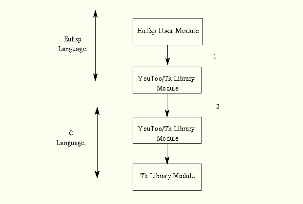

Technical Information


Introduction
This section pretends to explain some implementation aspects. Nevertheless, it is not going
to explain lines of code. The source code is full commented.
youtoo/Tk interpreter is written in C and for some parts in EuLisp.
The object oriented layer is written in EuLisp. General information about the EuLisp and
C modules will be given to make easier the comprehension of the code.
Modules
In order to execute your youtoo code, adding tk interfaces, the following EuLisp and C files are needed:
EuLisp modules
- tk_general.em
- Basic functions and widget classes. This module provides the widget classes and general
functions that are needed in higher level functions. Some of the functions here will not be
used by the user.
- tk_class.em
- This module contains some of the constructors and configuration functions for some Tk class.
- tk_class2.em
- This module contains the rest the constructors and configuration functions for some Tk class.
- tk_commands.em
- The general commands are included in this module. These commands could be applied to any
kind of Tk class. The are not specific for a particular Tk class.
- tk_utils.em
- Basic utilities are implemented here.
- tk_images
- This modules contains the necessary functions to manage images in Tk.
- tcl-tk.em
- This module produce the initialisation and exposes the previous one. This is the module to include in your import list.
C files
- Makefile
- globalvariables.c
- tk_init.c
- StrOperations.c
- FnCwidgets.c
- FnCcommands.c
- StrOperations.h
- globalvariables.h
Installation.
Follow the next steps to create the appropriate library:
- Modify the Makefile file according to your system. Do not forget to indicate the correct
path for Tcl and Tk library. Actually the TCL7.5 and TK4.1 versions are required.
- Execute make in your youtoo-tk directory.
If everything works without problems, the library file: libeultkWidgets.a should have been created.
This is the necessary library to link youtoo with. It contains all the necessary foreign functions.
- Be sure that the path for Tcl/Tk libraries is correct in your .eulrc file.
Path for the X library also need to be specified. That is:
(CFLAGS . "-Lnecessary-paths")
(CLIBS . " -lX11
-ltk4.1
-ltcl7.5")
- Compile module tcl-tk with the following command:
youtoo tcl-tk -l level1 -l math -load_path path -ffl eultkWidgets
where path is the location of libeultkWidgets.a library.
If everything works properly (it should) then libtcl-tk.{i,a} are created.
- Add the objects files in libeultkWidgets.a to libtcl-tk.a in order to allow the compilation of your modules as it says the getting started section.
This could be done with the next shell command:
ar q libtcl-tk.a tk_init.o FnCwidgets.o FnCcommands.o FnCimages.o
StrOperations.o globalvariables.o
Foreign function interface
The implementation of youtoo/Tk libraries has been using the foreign function mechanism provided
by youtoo. So that, C functions that implement tk commands has been bound to EuLisp functions
implementing the same command.
Implementation process has been the codification of the correct function call sequence
for each new feature that has been added.
The general sequence for each new youtoo/Tk function could be:

The previous diagram is a schematic one. That function call sequence is very similar to stubs used in RPC protocols. The next section outlines where is implemented the binding.
Implementation of callbacks
youtoo also provides the possibility of calling EuLisp closures (functions) from C code. This features
has allowed to provide callback functions easily.
Having a look to the code does not give so much idea about what is going on. However, everything is
understandable with a few hints.
-
How and where are the callbacks stored?
- Every time a callback is being declared
(via command: option or via any of the bind function) the
tk_allocate_registers function is call.
This is a foreign function. What it does is storing, in a C hash table, the name of the function,
the LispRef pointer to the function, and the LispRef to the possible arguments.
-
How the callback is invoked?
- Every time a callback has to be invoked, the eul_fpierpret command is invoked. eul_fpierpret is the Tk command bound to the event. Tk libraries do not know anything about EuLisp closures. This command is bound when the callback is initilized. It receives the name of the EuLisp function, looks it up in the C hash table, and executes the callback.